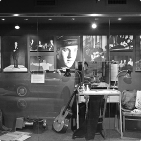
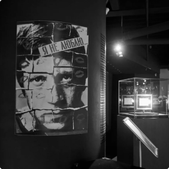
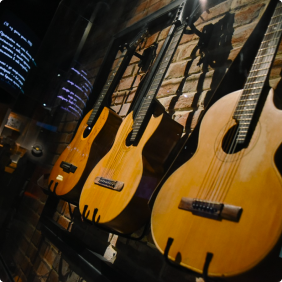
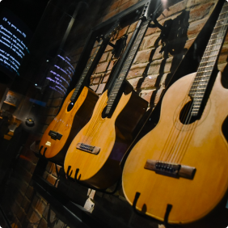
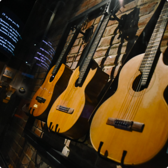

Галлерея
Для всех поклонников творчества известного поэта в небоскребе «Высоцкий» открыт Екатеринбургский
музей
Владимира Высоцкого.


 




Паркинг
Современный крытый 8-этажный паркинг Бизнес Центра «Высоцкий».
+7 (343) 379-57-68
Круглосуточно
-
200 руб.
1 час
-
5 500 руб./мес.
Круглосуточно
- Удобный и современный паркинг Бизнес центра «Высоцкий» с возможностью подъездных путей с ул. Малышева, ул.Красноармейская и ул. Карла Либкнехта, рассчитан на 350 машиномест.
- Въезд в паркинг осуществляется с помощью жетонов, получаемых в автоматических стойках при въезде на парковочный комплекс. Жетоны подлежат возврату при выезде с парковки.
- Услуги паркинга оплачиваются в терминалах, расположенных: 1. При выезде из Паркинга Бизнес Центра «Высоцкий» 2. В центральном холле Бизнес Центра «Высоцкий» 3. При въезде/выезде в Автомойку F1 и Паркинг через Въезд №1.
- Въезд в паркинг осуществляется с помощью жетонов, получаемых в автоматических стойках при въезде на парковочный комплекс. Жетоны подлежат возврату при выезде с парковки.
Смотровая площадка
Открытая смотровая площадка расположена в Бизнес Центре «Высоцкий» на 52 этаже — на высоте 186 метров.
+7 (343) 378-45-45
пн-пт 12-22; сб-вс 10-22
- Открытая смотровая площадка расположена в Бизнес Центре «Высоцкий» на 52 этаже — на высоте 186 метров. Отсюда взору открывается поистине фантастический вид: панорама Екатеринбурга простирается вдаль на 25 километров.
- Теперь екатеринбуржцы и гости города смогут открыть для себя Екатеринбург по-новому, увидеть его весь, как на ладони, оценить красоту и величие. Все посетители cмотровой площадки могут ближе познакомиться с городом, прослушав увлекательную аудио-экскурсию, в которой раскрываются интересные факты из истории города, памятников, зданий, парков и других знаковых мест.
- В каждом крупном городе мира высотки — культовое место, и Екатеринбург — не исключение. Со смотровой площадки небоскреба можно в непривычном ракурсе увидеть и архитектурные ансамбли исторической застройки, и екатеринбургские магистрали, и купола храмов...
Музей С.В. Высоцкого
Для всех поклонников творчества известного поэта «Высоцкий» открыт Екатеринбургский музей Владимира Высоцкого.
+7 (343) 378-45-45
пн-пт 12-22; сб-вс 10-22
-
200 руб.
Входной билет
-
100 руб.
Льготный билет
- В екатеринбургском музее представлен ряд экспонатов, которых нет нигде в мире: это и легендарный Mercedes 350 W 116, принадлежавший Владимиру Высоцкому с 1976 года; и восковая фигура Владимира Высоцкого, созданная скульптором Александром Сильницким по заказу екатеринбургского музея.
- Специально для музея были выкуплены 37 лотов, среди которых иконы, картины и украшения, которые принадлежали семье Высоцкого- Влади.
- Самый ценный экспонат - последнее стихотворение В.Высоцкого, которое он написал за полтора месяца до своей смерти и посвятил Марине Влади. Этому документу присвоена категория «Культурная ценность Российской Федерации».